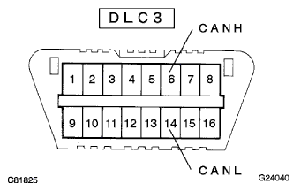
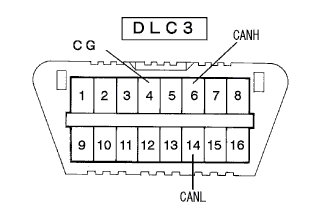

How to proceed with control system CAN communication system troubles |
| Step 1 | Vehicle entry |
| Step 2 | Examination and phenomenon confirmation |
| Step 3 | Diag code check |
 See.
See.Diag code and freeze frame data confirmation
Record the diag code and freeze frame data.
Diag code and freeze -frame data eraser
Diag code reconfirmation
Based on the recorded diagram code and freeze frame data, the defective phenomenon is reproduced and the diag code is output again.
| A | No code, cannot confirm and reproduce the phenomena |
| B | Neither U0121/94 (ABS), U0123/62 (VSC), U0124/95 (ABS), U0126/63 (VSC) is output. |
| C | The above code is output |
|
| ||||
|
| ||||
| |||||
| Step 4 | DLC3 inspection (Canh ← → CANL) |
|  |
Turn off the IG switch and measure the resistance between 6 (CANH) ← → 14 (CANL) of DLC3.
| OK | 54-67Ω |
| NG-A | 67Ω or more |
| NG-B | 54Ω or less |
|
| ||||
|
| ||||
| |||||
| Step 5 | DLC3 inspection (BAT ← → CANH, CANL) |
 |
Measure the resistance between each terminal of DLC3.
| Measuring terminal | Measurement conditions | Reference value |
|---|---|---|
| 6 (Canh) ← → 16 (BAT) | IG OFF | 1mΩ or higher |
| 14 (CANL) ← → 16 (BAT) | IG OFF |
|
| ||||
| |||||
| Step 6 | DLC3 inspection (CG ← → CANH, CANL) |
|  |
Measure the resistance between each terminal of DLC3.
| Measuring terminal | Measurement conditions | Reference value |
|---|---|---|
| 4 (CG) ← → 6 (Canh) | IG OFF | 3kΩ or higher |
| 4 (CG) ← → 14 (CANL) | IG OFF |
|
| ||||
| |||||
| Step 7 | To the diagcode combination tablereference) |
| Step 8 | Confirmation of diagcode combinations (guidelines)reference) |
| Step 9 | Adjustment, repair or replacement |
| Step 10 | Confirmation test |
| |||||
|---|---|---|---|---|---|